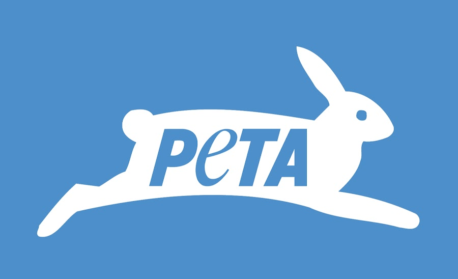

NGOs
The European Coalition to End Animal Experiments
In the European Union, all animal testing is being actively opposed by the Coalition to End Animal Experiments (ECEAE).
For almost 25 years, they have served as the voice for these defenceless animals. In that time, they have put a halt to animal testing for cosmetics
in the EU and introduced the Humane Cosmetics Standard, a set of requirements for cruelty-free cosmetics that are accepted around the world.
The ECEAE is fighting to end animal experimentation,and there are a few things you can do to help.
People for the Ethical Treatment of Animals (PETA)

There is a wealth of information regarding animal testing and the tools PETA is employing to combat it on their page dedicated to the fight against regulatory testing on animals.
It touts their accomplishments, such as giving more than $1 million to develop alternatives to animal testing. The Institute for In Vitro Sciences gave them a prize.
For the United States to stop using animals to test products for toxicity, a variety of solutions have been put forth. Here, you can support PETA in a number of ways and work to effect change.
Coalition for Consumer Information on Cosmetics
Coalition for Consumer Information on Cosmetics has a Leaping Bunny initiative to inform customers of products that are and are not free from cruelty.
The website can be found here, and you can use their convenient app on your phone or tablet to check out whether things are cruelty-free online.
As a result, you can browse the store with confidence and compare which brands are truly cruelty-free right in the midst of Target while you're there.
The Humane Cosmetics Act has recently been suggested by the CCIC to be passed by the US Congress.
Physicians Committee for Responsible Medicine
A non-profit organisation called Physicians Committee for Responsible Medicine (PCRM) with headquarters in Washington, D.C., advocates for a vegan diet,
preventative healthcare, and alternatives to animal testing. Neal D. Barnard started it in 1985, and PETA has backed it to advance their cause.
Most recently, the interested physicians provided a $25,000 grant to stop the University of Mississippi Medical Center's usage of live pigs in their physiology course.
Center for Alternatives to Animal Testing
The 1981-founded Johns Hopkins University Center for Alternatives to Animal Testing (CAAT) is actively involved in the medical industry's transition away from animal testing toward in vitro procedures.
To address the subject of animal testing and potential solutions, they frequently bring together industrial and academic scientists, animal welfare organisations, and the government regulatory community.
Additionally, they have been invited to take part in any American government-related action involving alternatives, such as the FDA's Sub-Committee on Toxicology. They are making a lot of effort to get us
further away from using animals in research lab and medical settings.